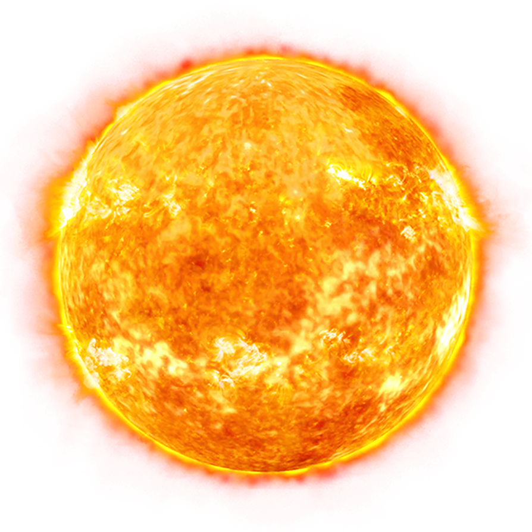
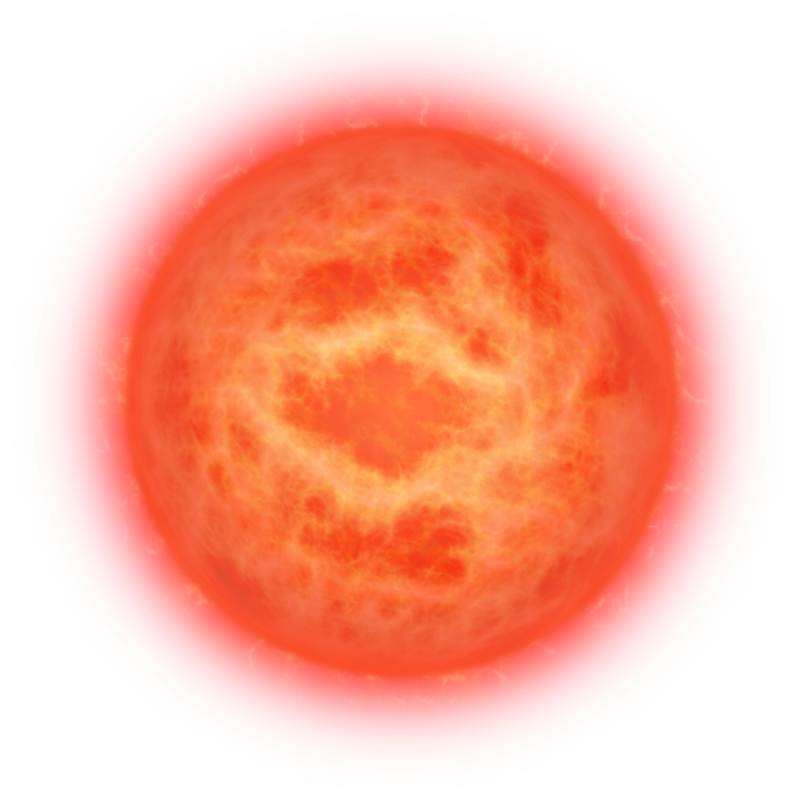
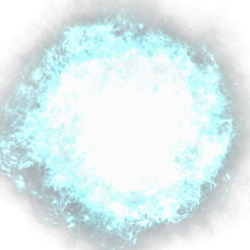

Fizyka środowiska

Gwiazda ciągu głównego o typie widmowym G (żółty karzeł) w centrum układu słonecznego. Uformowała się około 4.6 miliarda lat temu.
Słońce spala 600 milionów ton wodoru w ciągu każdej sekundy. Energia wytworzona w ten sposób we wnętrzu słońca potrzebuje od 10 do 170 tysięcy lat na wydostanie się na jego powierzchnie i jest źródłem ciepła oraz światla gwiazdy.

Kiedy wodór w jądrze słońca zacznie się wypalać, a jego fuzja zwolni do punktu w którym gwiazda nie będzie w równowadze hydrostatycznej, jądro słońca przejdzie proces gwałtownego kurczenia się podczas gdy jego wierzchnie warstwy zaczną się rozszerzać tworząc czerwonego olbrzyma. Obliczenia wskazują, że słońce w tej fazie będzie miało średnicę większą od orbity wenus a ziemia nie będzie nadawała się do życia.
Następną fazą jest odrzucenie przez gwiazdę wierzchnich warstw i przeistoczenie się w białego karła w którym nie przebiega już fuzja wodoru. Gwiazda będzie się powoli ochładzać nadal ogrzana przez jeszcze niedawno trwającą fuzję.

Use a spacebar or arrow keys to navigate.
Press 'P' to launch speaker console.